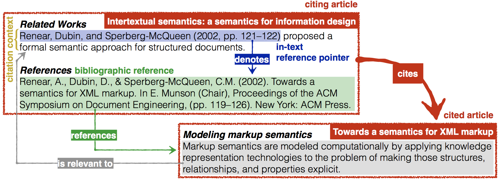
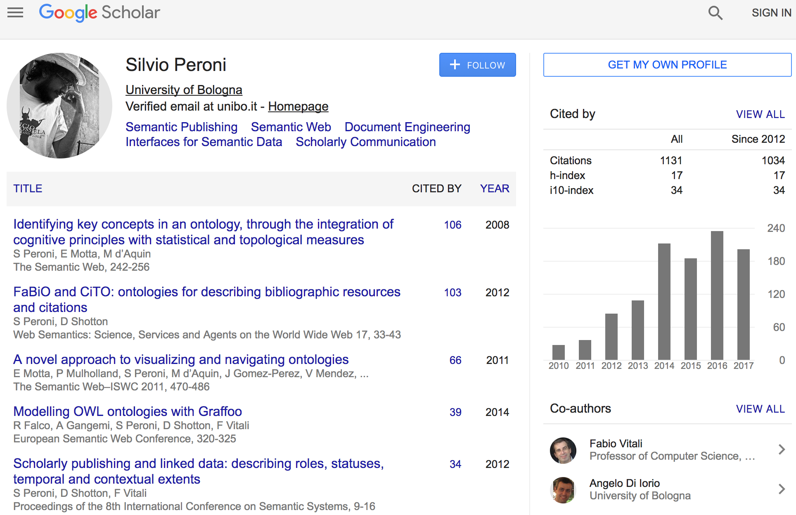
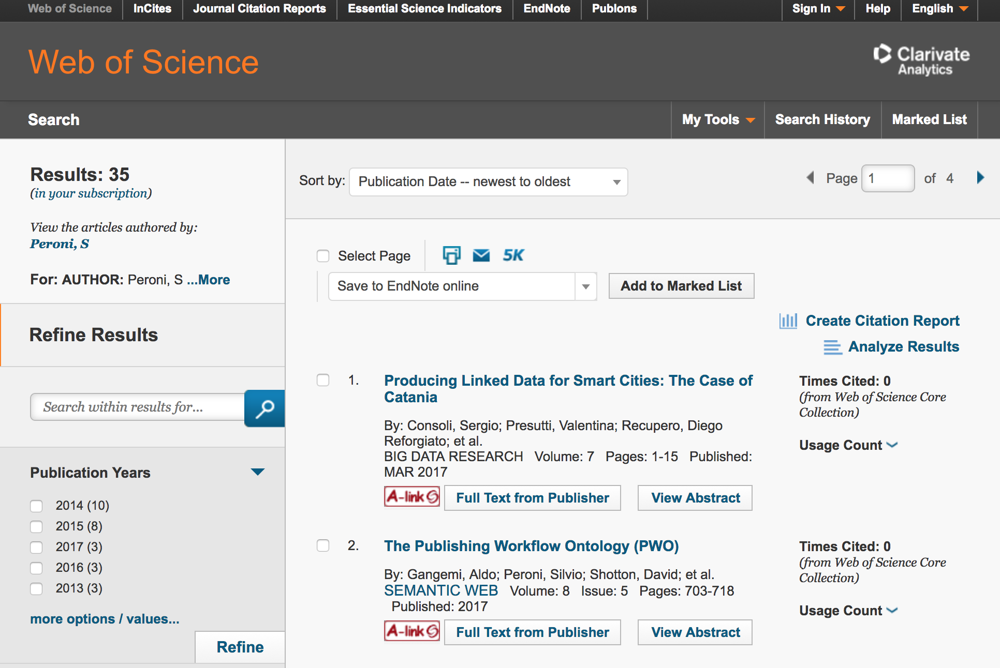
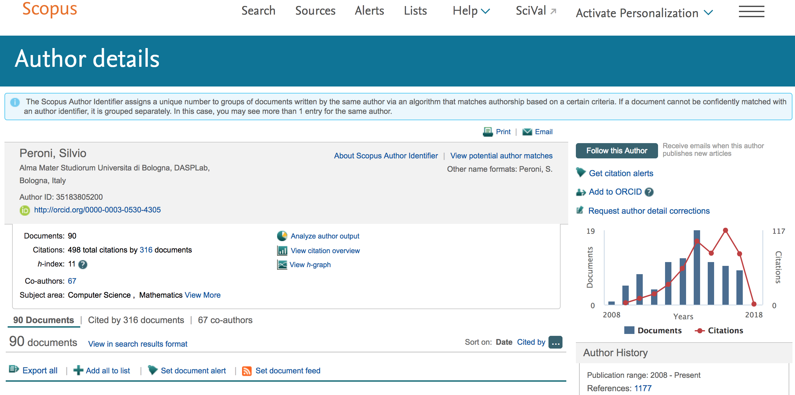
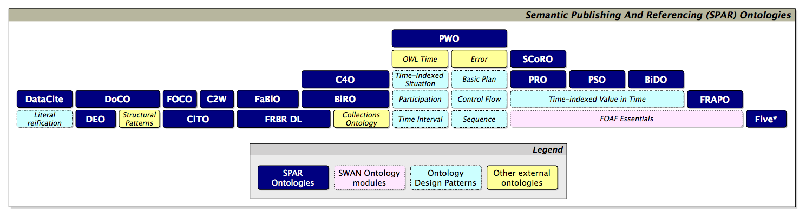
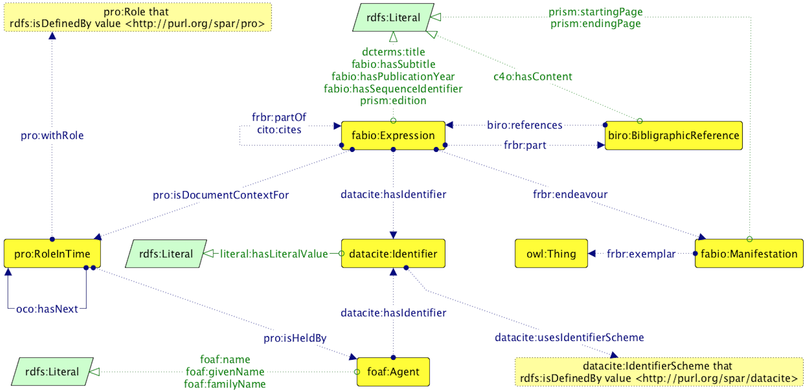
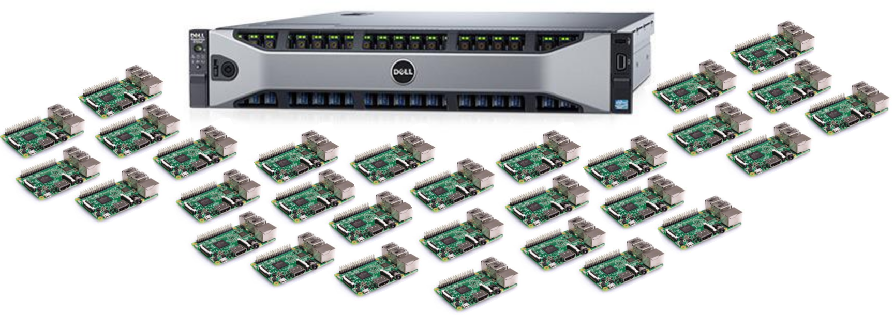

https://doi.org/10.6084/m9.figshare.5544907
https://w3id.org/people/essepuntato/presentations/oc-force2017.html
silvio.peroni@unibo.it 0000-0003-0530-4305 @essepuntato
DASPLab, DISI, University of Bologna, Italy
OpenCitations (http://opencitations.net) employs Semantic Web technologies to publish scholarly citation data in an open repository. The main service developed by OpenCitations is the OpenCitations Corpus (OCC), in which RDF-based scholarly citation data (i.e. bibliographic references) are stored and made freely available under a Creative Commons public domain dedication so that others may use and build upon them. The other resources of OpenCitations – namely the ontologies describing the data and the software developed to build the OCC – are also available with open licenses. OpenCitations follows the FAIR principles for data-intensive science, namely that the data should be findable, accessible, interoperable and re-usable, and employs the three basic criteria promoted by the Initiative for Open Citations, namely that the citation data must be structured, separable and open.
In this presentation, we will explain how OpenCitations harvests citations and associated metadata from several external APIs (those of Europe PubMed Central, Crossref and ORCID), describes them using the SPAR Ontologies, the Provenance Ontology and FOAF according to the OCC metadata model, and stores all the data in JSON-LD. The stored citations are made accessible via the OCC SPARQL interface, by means of the HTTP requests (using content negotiation, e.g. https://w3id.org/oc/corpus/br/1), and as monthly data dumps. As of 5th August 2017, the OCC had ingested the references from 211,196 citing bibliographic resources and contained information about 8,986,030 citation links to 5,106,542 cited resources.
We will exemplify how OpenCitations can benefit the scholarly community at large, being used by international initiatives and projects including Wikidata/WikiCite, OpenAIRE, LOC-DB and eLife, and will describe future plans, made possible by funding from the Sloan Foundation, to increase the rate of citation ingest thirty-fold to 15 million citations per month, and to develop novel user interfaces to access and visualize the citation data.

A citation is a conceptual directional link from a citing entity to a cited entity, instantiated by a bibliographic reference + an in-text reference pointer denoting such reference
A citation index is a kind of bibliographic index, an index of citations between publications, allowing the user to easily establish which later documents cite which earlier documents
– from Wikipedia
Some are freely accessible but not downloadable
Others can be accessed only by paying significant access fees
 

Semantic Publishing concerns the use of Web and Semantic Web technologies and standards for enhancing a scholarly work semantically (by means of plain RDF statements, nano-publications, etc.) so as to improve its discoverability, interactivity, openness and (re-)usability...
... for both humans and machines
David Shotton (2009). Semantic publishing: the coming revolution in scientific journal publishing. Learned Publishing, 22 (2): 85–94.
DOI: https://doi.org/10.1087/2009202
Back to 2010: Semantic Publishing and Referencing (SPAR) Ontologies form a suite of orthogonal and complementary OWL 2 DL ontology modules for the creation of comprehensive machine-readable RDF metadata for every aspect of semantic publishing and referencing

The OpenCitations Corpus (OCC, http://opencitations.net) is a Linked Open Data (LOD) repository of CC0 citation data described with SPAR Ontologies (BiRO, C4O, CiTO, DataCite Ontology, FaBiO, PRO), FOAF, PROV-O, DCAT, VOID
It provides >11M citation links from ~260,000 citing articles to ~6M cited resources + provenance information
OCC data are FAIR:
http://w3id.org/people/essepuntato/papers/oc-garr2017.html
We developed several scripts for implementing the ingestion workflow that populates the OpenCitations Corpus
All the software is available on the OpenCitations GitHub repository and released as open source code with the ISC License
These scripts implement a live and iterative process
Live: it's working while I'm speaking. It doesn't sleep, never. It's like a sentient, relentless, fast zombie – watch out!
Iterative: the ingestion workflow continuously calls several external APIs to obtain new reference lists and clean metadata of the citing and cited papers
At present, all the reference lists are taken by processing the XML sources of the papers in the PubMed Central Open Access subset
Europe PubMed Central API for retrieving the XML sources
We ask for the most recent papers first
Citing papers includes articles published in 2016 and 2017
There are 1.75M OA articles available in PubMed, according to their API. We have harvested 15% so far...
Crossref APIs to obtain additional information (title, authors, venues, etc.) about citing/cited papers, and then call the ORCID APIs to obtain ORCIDs of the authors
Available at https://doi.org/10.6084/m9.figshare.3443876 and implemented in the OpenCitations Ontology

| Entity type | What it describes | Count in the OCC |
|---|---|---|
| Bibliographic resource (br) | Conference papers, book chapters, journal articles, academic proceedings, books, journals, etc. | ~7.3M |
| Resource embodiment (re) | Digital vs. print, first and ending pages, etc. | ~4.3M |
| Bibliographic entry (be) | Textual content of a reference in a reference list | ~10.5M |
| Resposible agent (ra) | Given name, family name and ORCID of the agent involved | ~22.5M |
| Agent role (ar) | Author, publisher, etc. | ~28.6M |
| Identifier (id) | DOI, PubMed ID, PubMed Central ID, ORCID, ISSN, etc. | ~15.1M |
| Data statements | Provenance statements |
|---|---|
| ~0.45B | ~1.5B |
| Entity type | Kinds of entity | Entities with identifiers |
|---|---|---|
| Bibliographic resource |
Academic Proceedings: 13,804 Book: 47,824 Book Chapter: 68,798 Book Series: 15 Data File: 4,155 Expression Collection: 10,321 Journal: 27,373 Journal Article: 4,481,224 Journal Issue: 1,029,369 Journal Volume: 365,286 Part: 6 Proceedings Paper: 28,125 Reference Book: 66 Reference Entry: 7,917 Report Document: 1,946 Series: 155 Specification Document: 600 Thesis: 768 Generic kind: 1,281,627 |
DOI: 4,697,326 ISBN: 82,329 ISSN: 38,359 PMCID: 1,280,229 PMID: 3,954,683 URL: 4,835,585 |
| Responsible agent | - |
ORCID: 240,989 URL: 5,642 |
| Identifier |
DOI: 4,697,326 ISBN: 82,329 ISSN: 38,359 ORCID: 240,989 PMCID: 1,280,229 PMID: 3,954,683 URL: 4,841,227 |
- |
Direct access to bibliographic resources by means of their HTTP URIs (via content negotiation, e.g. https://w3id.org/oc/corpus/br/1)
SPARQL endpoint (https://w3id.org/oc/sparql)
Monthly dumps (http://opencitations.net/download, stored in Figshare)
Dump views and downloads
Some known adopters: Wikidata, OpenAIRE, LOC-DB, eLife, Ontotext, independent researchers (Anna Kamińska, Daniel Himmelstein, Thiago Nunes and Daniel Schwabe)
Website accesses
Use by country: United States (33.7%), France (31.3%), Bulgaria (14.3%)
OpenCitations Blog on Wordpress at https://opencitations.wordpress.com
OpenCitations Twitter account at
https://twitter.com/opencitations
It's a virtual machine - it doesn't exist!
Geoffrey Bilder, Crossref
Jonathan Dugan, Berkeley Institute for Data Science
Catriona MacCallum, Hindawi
Johanna McEntyre, Europe PubMed Central
Cassidy Sugimoto, Indiana University
Dario Taraborelli, Wikimedia Foundation
We have recently received a small grant from the Alfred P. Sloan Foundation for
one year's salary for a postdoc (Ivan Heibi, who will start in November) to develop new user interfaces
new hardware to enhance the OCC performance
⇒ from 8M citations per year to 240M
DELL PowerEdge R730xd V4, 512GB RAM, 22TB HD + 30 Raspberry Pi 3
